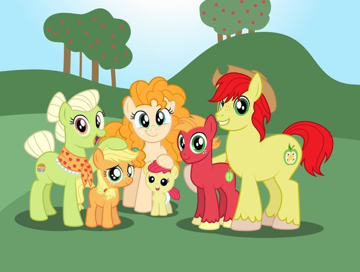

Icon personagem

Marca

familia

Nome e especie
O seu nome é Applejack, sendo frequentemente chamada pelo apelido de AJ.
Na série, ela é uma pônei Terrestre. No universo de Equestria Girls, ela possui uma contraparte humana.
Personalidade
trabalhadora, diligente e confiável, preferindo métodos tradicionais de trabalho. Ela é descrita como "pé no chão", mas pode ser muito teimosa e orgulhosa, às vezes recusando ajuda mesmo quando está exausta.
Elemento da amizade
honestidae
Habilidades
Seus passatempos incluem praticar esportes e competições de força, tocar instrumentos (como banjo, violino e gaita), laçar e participar de rodeios.
Como pônei terrestre, possui uma força física incrível, sendo capaz de derrubar maçãs de árvores ou parar objetos pesados com seus coices. Ela é uma mestre no uso do laço, excelente no pastoreio de animais e uma das melhores confeiteiras de Equestria, especialista em pratos com maçã.
Curiosidades
Seu animal de estimação é sua fiel companheira é uma cadela de pastoreio chamada Winona.
Seu nome também é o de uma bebida alcoólica forte feita de maçãs.
Seus trabalhos ao longo da série são: como fazendeira no Rancho Maçã Doce e, mais tarde, torna-se a Professora da Honestidade na Escola da Amizade.
Melhores amigas
Rainbow Dash, Pinkie Pie, Rarity, Fluttershy e Twilight Sparkle. Ela é muito ligada à sua família, especialmente aos irmãos Big McIntosh e Apple Bloom.